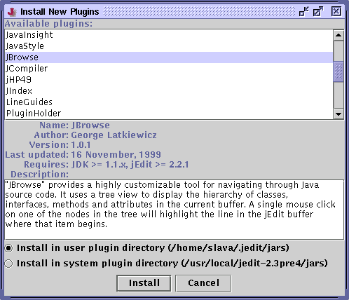

Installing Plugins
To install new plugins, click the Install New Plugins button in the plugin manager. The plugin manager will then connect to jEdit plugin central and download a list of plugins that you do not yet have. Clicking on a plugin will display information about it.
There are two locations where plugins can be installed; the user-specific plugin directory, and the system-wide plugin directory. On Windows 95/98, it doesn't make any difference where plugins are installed. On multiuser systems such as Unix or Windows NT, however, each user has their own plugin directory, while the system-wide plugin directory is shared by all users on the system.
Figure 10-4. The Install New Plugins dialog box

A progress window will be shown while the plugins are being downloaded.
Figure 10-5. The plugin download dialog box